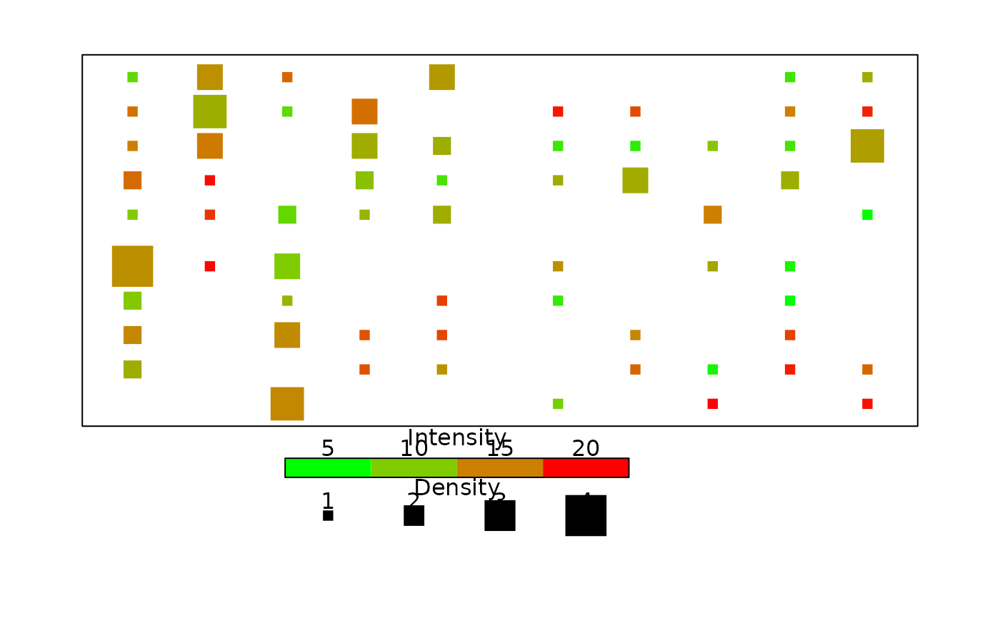

Compute a matrix of counts from a list of x,y positions
makeDensityMatrix.RdCompute a matrix in which the counts in each cell represent the number of occurrences of that cell's coordinates in a list of x,y cooordinate values, optionally computing a second matrix of the average of the values attached to the coordinate observations.
Arguments
- x,y
Vectors of x and y coordinates. These are usually combined in a matrix or data frame of two columns.
- z
Optional values attached to each coordinate pair. If these are present, it can be in a matrix or data frame of three columns, x, y and z.
- nx
The number of "x" cells in the output matrix.
- ny
The number of "y" cells in the output matrix.
- zfun
The function to apply to the summed values attached to each coordinate pair. Currently defaults to mean, otherwise the sum is returned.
- xlim
The extreme coordinates in the horizontal direction (see Details).
- ylim
The extreme coordinates in the vertical direction (see Details).
- geocoord
Whether to correct the matrix values for the areal distortion of the Mercator projection.
Details
makeDensityMatrix expects two vectors or a matrix or data frame with at least two columns. The function was written for geographic coordinates, but will also work for other numeric coordinates. An optional third vector or column of values for each coordinate will be processed.
Each coordinate pair adds to the count in that cell of the matrix. If there is a third element, that value is added to a second matrix in the same position. By default, the function computes the mean of all values in each cell. If zfun="sum", the sum of values in each cell will be returned.
As geograhic data sets may be very large, leading to memory problems, makeDensityMatrix can be run on small sections of the data set and the resulting matrices added together as long as the coordinate limits are consistent throughout.
Value
Either a matrix of counts of coordinate pairs within each cell or a list of two such matrices, the second containing the mean or sum of values associated with coordinate pairs.
Examples
x<-sample(1:20,400,TRUE)
y<-sample(1:20,400,TRUE)
z<-runif(400,5,20)
xyz<-makeDensityMatrix(x,y,z,nx=20,ny=20,xlim=c(1,10),ylim=c(1,10),
geocoord=FALSE)
#> Range of density (>0) - 1 5
#> Range of intensity (>0) - 5.111809 19.95792
par(mar=c(7,3,2,3))
plot(0,xlim=c(1,10),ylim=c(1,10),type="n",xlab="",axes=FALSE)
box()
densityGrid(xyz,range.cex=c(1,4),xlim=c(1,10),ylim=c(1,10),
red=c(0,0.5,0.8,1),green=c(1,0.8,0.5,0),blue=0,pch=15)
color.legend(3,-0.7,7,-0.2,c(5,10,15,20),
rect.col=color.scale(1:4,cs1=c(0,0.5,0.8,1),cs2=c(1,0.8,0.5,0),cs3=0,alpha=1))
par(xpd=TRUE)
text(5,0.3,"Intensity")
points(c(3.5,4.5,5.5,6.5),rep(-1.7,4),pch=15,cex=1:4)
text(c(3.5,4.5,5.5,6.5),rep(-1.3,4),1:4)
text(5,-1,"Density")

par(xpd=FALSE)